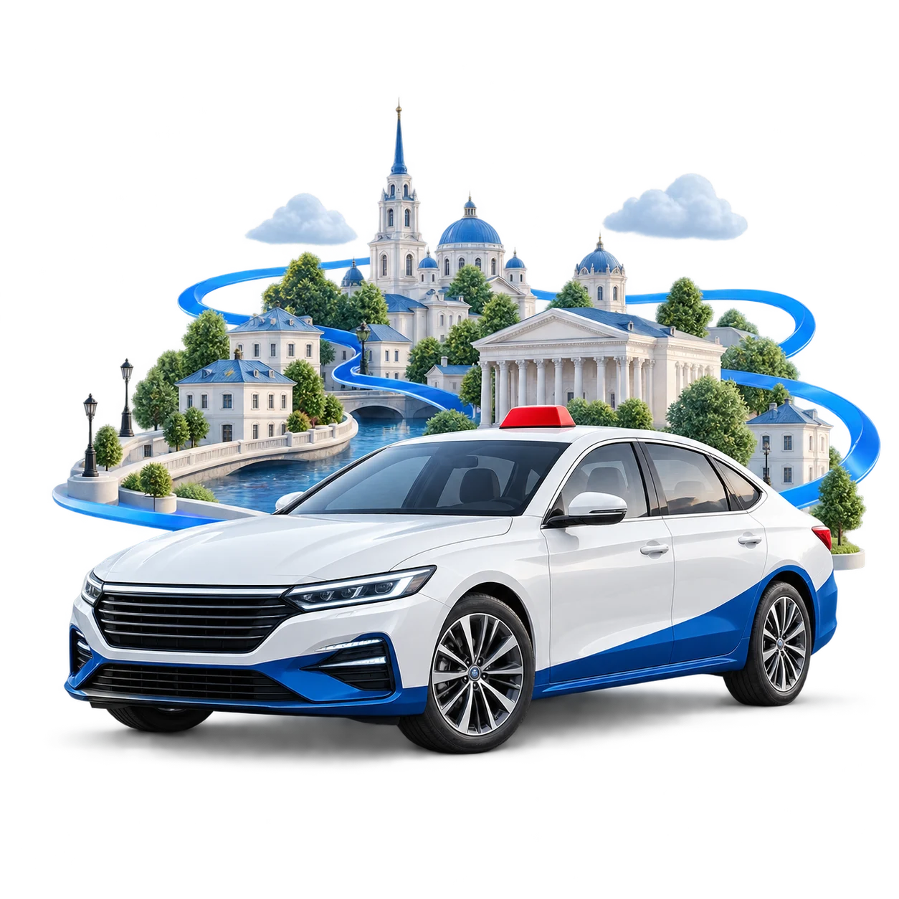

Ваш город
На работу, домой или на встречу — поездки по Луганску.
ВАШ МАРШРУТ НАЧИНАЕТСЯ ЗДЕСЬ
На работу, домой, к своим.
Астро-Волга Такси — для поездок по Луганску.

ПО ПУТИ С ВАШИМ ГОРОДОМ
У каждого дня свой маршрут.
Выберите, как вам удобнее вызвать такси.
На работу, домой или на встречу — поездки по Луганску.
Позвоните в службу и обсудите маршрут с командой.
Отдельное пассажирское приложение для заказа поездок.
Посадка, расстояние и время — основные составляющие тарифа.
О подаче, оплате и предварительном заказе — в разделе вопросов.
Контакты для пассажиров и отдельное направление для водителей.
ПЕРЕД ПОЕЗДКОЙ
Уточните стоимость и детали маршрута
при заказе такси.
Для повседневных дел и встреч в вашем городе.
Пока действующие тарифы не предоставлены, стоимость обозначена прочерками. Условия поездки уточняйте при заказе.
Иллюстрация интерфейса приложения
ПАССАЖИРАМ
Утренние дела, встречи с друзьями или дорога домой. Пусть приложение Астро-Волга Такси будет под рукой, когда нужно ехать.
На работу, за покупками, на встречу — по делам вашего дня.
Установите пассажирское приложение для заказа поездок.
Предпочитаете разговор? Свяжитесь с командой службы.
Файл приложения будет добавлен перед запуском.
Наведите камеру телефона на QR-код, чтобы открыть раздел приложения.
Прямая ссылка на APK появится позжеРеальные скриншоты будут добавлены после получения материалов.
ПОЛЕЗНО ЗНАТЬ
Собрали самое важное. Если ваша ситуация особенная, обсудите её с командой службы.
Позвоните по номеру службы или воспользуйтесь пассажирским приложением. Контактный номер и ссылка на скачивание будут добавлены перед запуском сайта.
Ориентируйтесь на действующие тарифы службы и уточняйте итоговую стоимость при заказе. Она может зависеть от маршрута, расстояния, времени и дополнительных условий. До подтверждения тарифов числовые значения на сайте не публикуются.
Время подачи зависит от доступных автомобилей, точки отправления и дорожной ситуации. Ориентир для вашей поездки уточняйте при заказе.
Уточните доступные способы оплаты у команды службы перед поездкой. Подтверждённые условия оплаты будут добавлены на сайт.
Возможность предварительного заказа и подходящее время подачи обсудите со службой. При обращении сообщите дату, время и адрес отправления.
Перейдите в раздел для водителей, свяжитесь с командой по отдельным контактам и уточните требования к автомобилю, документам и порядок подключения. Отдельное приложение для водителей можно будет скачать по кнопке в этом разделе.
СОТРУДНИЧЕСТВО И ВАКАНСИИ
Знаете Луганск и любите быть в движении?
Познакомьтесь с командой Астро-Волга Такси и обсудите подключение.
Обсудите условия и требования к водителю.
Уточните необходимые документы и следующие шаги.
Скачайте приложение для водителей после согласования условий.
ОСТАЁМСЯ НА СВЯЗИ
Поездка, вопрос или сотрудничество — выберите нужный контакт службы.